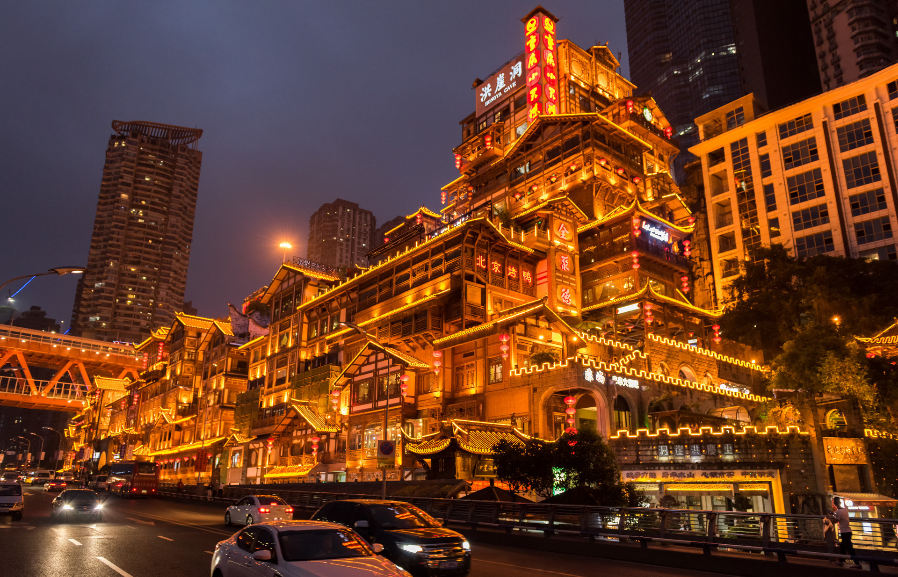

重庆故事

霓虹灯与烟火气交织，衣屩蓝缕与西装革履擦肩而过。城市从水里山里拔地而起，高楼大厦纹丝不动。 你同时看到过江索道，江面上停驻着船舶，旁边是新建的大桥，大桥下有呼啸穿梭的轨道交通。或者你在过江大桥上，身旁会突然窜出印着重庆言子的轨道列车。
夜晚抬头，红与白映亮了天际，猫咪却在静谧的巷子里舒服地蜷着身子，懒懒睡在家院的围墙上。如果看倦了繁华，转头望向江对面星星点点的万家灯火，或成了最美的风景。 不知道何时，它成了“赛博朋克城”。 我只知道，这是任何地方都不可替代的，我心中的重庆城。在我眼里，重庆是一座硬核的，赛博朋克的城市。 山城重庆，独一无二，无人超越。
抗战重庆：一座英雄之城
-
1937
7.7
- 全面侵略战争爆发 日本侵略者向中国发动全面侵略，日寇的铁蹄开始向南京进发。中华民族已经到了生死存亡的边缘，面临前所未有的考验。
-
1937
11.20
- “战时陪都” —— 重庆 南京国民政府发表《国民政府迁驻重庆宣言》,宣布国民政府正式迁都重庆。国民政府决定迁都重庆,旨在向国内和全世界表明中国在外来侵略面前不甘屈服和抗战到底的决心。在此后几年中,重庆的命运得以改变,抗战的命运得以改变,世界反法西斯战争的命运也得以改变。
-
1941
6.5
- 日战机空袭重庆 日军对重庆实施了连续5个多小时的大规模轰炸，致使大批在较场口防空隧道内躲避空袭的重庆市民窒息死亡，制造了震惊中外的“六五”大隧道惨案。
-
1944
6.20
- 美国副总统华莱士访华抵渝 美国副总统华莱士访华抵渝，罗斯福总统特地委托他携带一幅精美卷轴赠与重庆人民，内书颂词：“以表吾人钦佩该市英勇之男女市民。当该市遭遇空前未有之空袭时，人民坚定镇静，不被征服，足证恐怖主义对于争取自由之民族，不能毁灭其精神。此种为争取自由表现之忠实，将鼓舞来世而不朽。”
- 1937-07-07 全面侵略战争爆发
- 1937-11-20 “战时陪都” —— 重庆
- 1939-05-03 日战机空袭重庆
- 1941-06-05 36架日机狂炸重庆市中心繁华地区
- 1944-06-20 美国副总统华莱士访华抵渝